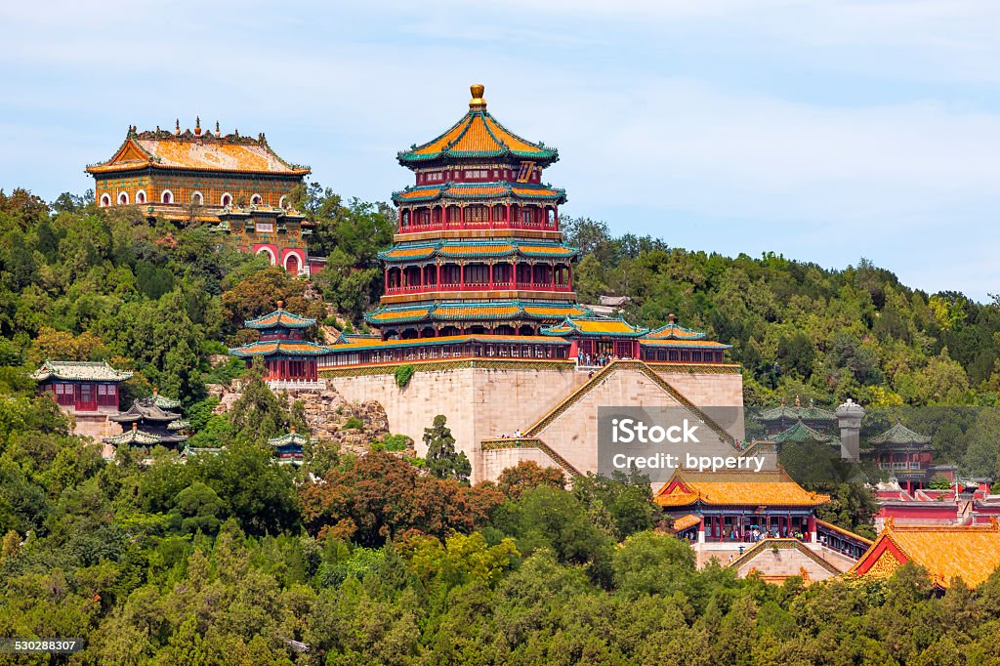

<!DOCTYPE html>
<html lang="en">
<head>
    <meta charset="UTF-8">
    <meta name="viewport" content="width=device-width, initial-scale=1.0">
    <title>Document</title>
</head>
<body>
    
</body>
</html>
<li>中國</li>
            
            <li>歷史:明清兩朝二十四位皇帝的皇宮。故宮始建於明成祖永樂四年（1406年），永樂十八年（1420年）落成。</li>
            <li>交通:地鐵：1號線「天安門東」站B出口出，步行至午門（需先通過天安門安檢）。
                公交：2路、120路等至「天安門東」站。</li>
            <li>地址:北京市東城區</li> 
            
            <li>地址:中華人民共和國陝西省西安市臨潼區西楊村。</li>
            <li>歷史:秦始皇陵建於公元前246年至公元前208年，歷時39年，是中國歷史上秦朝皇帝秦始皇的陵墓，也是中國第一個規模宏大、布局講究且保存完好的帝王陵寢，現存陵冢高76米，陵園布置仿秦都咸陽，分內外兩城，內城周長2.5公里，外城周長6.3公里</li>
            <li>交通:1. 公共巴士：

                在西安火車站東廣場乘坐遊 5 或 306、914、915 公車到終點站「兵馬俑」，車程約 1 小時。
                
                從臨潼區出發，可選擇914、915、101路專線等公車，至秦始皇陵下車，全程約 5 公里，約需 15 分鐘左右。
                
                2. 旅遊專車：
                
                火車站附近還有不少遊覽車可以搭乘前往兵馬俑，並有「東線一日遊」的項目，從市區搭到景點的單程價格約為 120 人民幣。
                
                3. 計程車/網約車：
                
                從市區叫車到兵馬俑約需1小時，費用在 100-150 人民幣左右。
                
                4. 自駕：
                
                從西安市區出發，沿西臨高速或 31 2國道向東行駛，按指示牌即可到達。
                
                景區附近有停車場，收費標準為小車 15元/次，大巴 30元/次。</li>
        
        <li>交通方式：
            高鐵： 從北京北站或清河站搭乘京張高鐵至「八達嶺長城站」，車程約20-40 分鐘，出站後步行即可到達景區入口。 ...
            市郊鐵路S2線： 從北京黃土店站搭乘S2線至「八達嶺站」（非高鐵站），車程約1.5 小時，需步行一段距離至景區。
            巴士： 從德勝門公交站搭乘877 路公交車直達八達嶺景區</li>
        <li>地址：. 北京市昌平區南口鎮居庸關村 </li>    
        <li>歷史:喺2000幾年前春秋戰國時期開始起，秦朝統一中國之後起好萬里長城。漢、明兩代又曾經大規模咁修築過。</li>

        <li>其他景點</li>
        
        <li>地點:中國北京市海淀區</li>
        <li>歷史:頤和園是清朝的皇家行宮和大型皇家園林，位於中國北京市海淀區西北，占地297公頃</li>
        <li>交通:地鐵：乘坐北京地鐵4號線在北宮門站下車，D口出站即是頤和園北宮門入口；或者在西苑站下車，從C2口出站後步行至頤和園東宮門。 （2） 公交：多條公交線路如330、331、332、346等均可直達頤和園</li>
         
